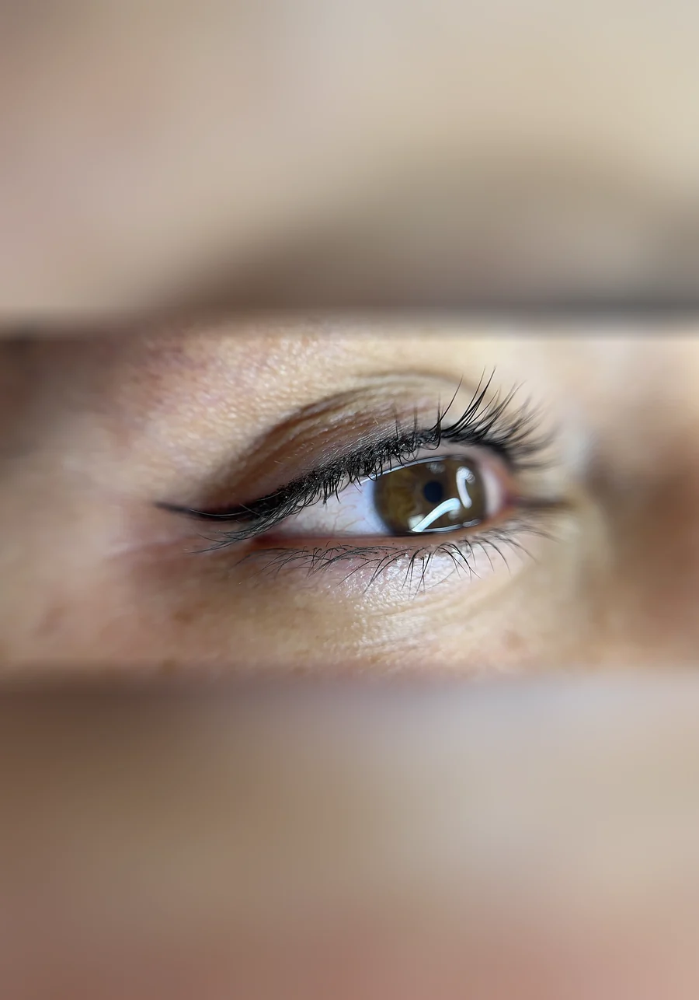

Top Eyeliner
Top Eyeliner is a permanent makeup procedure that defines the upper lash line with long-lasting pigment, from subtle lash enhancement to a polished eyeliner look.

Definition that survives the day
Adriana’s Permanent Makeup offers four permanent eyeliner options in Wilmington, MA and Salem, NH, priced from $250 to $500. Top and Bottom Eyeliner define a single lash line, Smokey Eyeliner adds soft shading above the top line, and the Eyeliner Combo pairs top and bottom in one visit and one healing period.
From $250 USD
or 4 interest-free payments with Cherry. see your options, no impact on your credit score
Adriana’s offers four permanent eyeliner treatments, priced from $250 to $500. They differ by which lash line is treated and how much shading is added, from a subtle lash enhancement to a full smokey effect. All are performed at the Wilmington, MA and Salem, NH studios.
Top Eyeliner is a permanent makeup procedure that defines the upper lash line with long-lasting pigment, from subtle lash enhancement to a polished eyeliner look.

Smokey Eyeliner combines defined upper-lid liner with soft shading for a blended, makeup-inspired effect that lasts for years with proper care.

Bottom Eyeliner places pigment along the lower lash line for subtle, natural-looking definition that lasts for years with proper care.

Eyeliner Combo combines Top and Bottom Eyeliner in one session for complete upper and lower lash line definition that lasts for years.
Permanent eyeliner is priced $250 to $500, confirmed at the $50 consultation, which is credited toward your service if you book it. Every other service is published openly, from $250 to $850, on the price list, so you can see the range the studio works in before you book anything.
Yes. Cherry offers 4 interest-free payments, or a longer plan of up to 24 months with interest. Checking your options takes about a minute and uses a soft credit check, so it does not affect your credit score. Cherry is an independent financing provider: it sets approval and rates, not the studio. See how the payment plan works.
The perfecting session exists for exactly that. It is scheduled 6 to 8 weeks after the first appointment, once the skin has healed, and it is included in the original price at no extra charge. Pigment settles differently on different skin, so the second pass is part of the procedure rather than a repair you pay for.
Most clients book a colour refresh every 12 to 24 months; how long the pigment itself lasts depends on the technique and your skin (each service page gives its own range). After that, a yearly touch-up refreshes the colour from $300, priced by how much pigment is left rather than at a flat rate. That is a separate visit from the perfecting session, which is included in the original price and happens in the first weeks.
Yes. Pregnancy, breastfeeding, being under 18, and current isotretinoin use are refused at both studios, with no exception. Blood thinners, autoimmune conditions and a history of keloid scarring need clearance from your doctor first. The full list is published in the contraindications guide before you book, not after.
Adriana Souza Santos has performed more than 5,000 procedures across 20+ years and trained over 300 students. She holds AAM Diamond Certified Trainer status and New Hampshire Body Artist licence 4283, valid through 18 July 2028, which you can verify yourself at the state’s public lookup rather than take on trust.
Real results from the Wilmington, MA and Salem, NH studios. Each photo is labelled with the technique that made it.
 Permanent Eyeliner
Permanent Eyeliner Top Eyeliner
Top Eyeliner Smokey Eyeliner
Smokey Eyeliner Eyeliner Combo
Eyeliner Combo1 4
Permanent eyeliner at Adriana’s ranges from $250 for the lower lash line to $500 for top and bottom together. Only Smokey Eyeliner adds shading; the rest simply define a line.
| Option | Price | Area treated | Look | Best for |
|---|---|---|---|---|
| Top Eyeliner | $350 | Upper lash line | Lash enhancement to a defined line with a tail | First-time clients |
| Bottom Eyeliner | $250 | Lower lash line | Deliberately fine, so it doesn't close the eye | Adding to a top liner |
| Smokey Eyeliner | $400 | Upper lash line | Defined line plus soft shading blended upward | Bolder, less reversible looks |
| Eyeliner Combo | $500 | Upper and lower | Top and bottom in one session | Both lines, one healing period |
Top ($350) plus Bottom ($250) total $600 booked separately; the Combo bundles both for $500, saving $100 and one healing period. Smokey, at $400, treats only the upper lid and is not a substitute for the Combo.
Most first-time clients start with Top Eyeliner, gauging how they feel before adding more; Bottom is almost always added to a top line rather than booked alone. Smokey is the bolder, less reversible option; anyone unsure should start with Top and add shading later. Wanting both lines makes the Combo the better value at $500 versus $600 separately.
Contact lenses come out for the appointment; your artist tells you how long to leave them out after. The procedure follows consultation, numbing, and placement, with a perfecting session 6 to 8 weeks later included.
Anyone with an active eye infection, recent eye surgery, or eye conditions should see an eye doctor first. The American Academy of Dermatology documents that eyeliner pigment can rarely react during an MRI, causing burning or swelling; tell the technician and ask them to stop the scan. Full guidance is on the aftercare guide.
Every eyeliner price includes the consultation, numbing, the procedure, and the perfecting session 6 to 8 weeks later. It excludes the Yearly Touch-Up, a separate paid visit about 12 months out from $300, priced by pigment remaining, and every option can be split with Cherry.
An active eye infection, recent eye surgery, or eye conditions mean talking to an eye doctor first. Pregnancy, breastfeeding, isotretinoin use, and being under 18 rule the procedure out; diabetes, autoimmune conditions, and blood thinners need clearance, detailed on the aftercare guide.
Top Eyeliner treats the upper lash line, ranging from a subtle enhancement to a defined line with a tail, priced at $350. Bottom Eyeliner treats the lower line only, deliberately fine so it doesn't close the eye visually, costs $250, and is usually added to a top line.
Bottom Eyeliner is the most subtle and smallest area on the entire menu, reflected in its $250 price, the lowest of any service at Adriana's. Top Eyeliner covers more of the lash line and a wider range of looks, which is why it costs $350.
Smokey Eyeliner is less reversible than a simple line because it adds soft shading blended upward, a bolder aesthetic commitment. Clients who are unsure should start with Top Eyeliner instead and add shading later once they know how they feel about the line alone.
Top and Bottom Eyeliner booked separately cost $350 plus $250, or $600 total, across two separate healing periods. The Eyeliner Combo bundles both lash lines into a single $500 appointment, saving $100 and cutting healing down to one period instead.
Yes. Contact lenses come out before any eyeliner appointment, and your artist tells you how long to keep them out afterward, since that depends on your eyes and the technique used. Red, swollen, or watery eyes should be checked by an eye doctor before reinserting lenses.
The American Academy of Dermatology documents that eyeliner pigment can rarely cause burning, tingling, or swelling during an MRI. Tell the technician right away and ask them to stop the scan; it is a known, documented reaction, not a sign anything went wrong.
Beyond eyeliner: eyebrows, lips, the Brows + Lips Combo, and the Yearly Touch-Up once healed. Read the aftercare guide first; both Wilmington, MA and Salem, NH offer the same prices.
See real-time availability for the Wilmington MA and Salem NH studios, or send your question and we answer with the honest options for your features. We answer in English and in Portuguese.
Book Online Now Ask a Question FirstSix things are worth verifying with any permanent makeup artist before you book: their licence number, who trained them, what the price includes, whether a price is published at all, what they refuse to do, and whether the technique actually suits your skin.
| What to check | What to ask any artist | The answer here |
|---|---|---|
| Practitioner licence | Ask for the licence number and check it yourself with the state or the town, instead of taking a badge on a website at face value. | New Hampshire Body Artist licence 4283, valid through 18 July 2028 and searchable at the state’s own public lookup. Town of Salem BODA-10 and BODE-4. Body Art Practitioner licence from the Town of Wilmington Board of Health. |
| Who trained them | Ask who certified the artist, and whether that credential can be checked with the body that issued it. | AAM Diamond Certified Trainer, the American Academy of Micropigmentation’s highest level of instructor recognition. |
| What the price includes | Ask whether the perfecting session is included or billed later. This is where quoted prices most often stop matching the final bill. | The perfecting session, 6 to 8 weeks after the appointment, is included in every original price. The yearly touch-up, from $300, is a separate visit about 12 months later. |
| Whether the price is published at all | The consultation costs $50, credited toward the service. A studio that will not name a range before seeing you is not comparable to one that will. | All 13 services are published with their prices, from $250 to $850, on the price list. |
| When they say no | Ask what would make them refuse to perform the procedure. An artist who never refuses is a warning sign. | Pregnancy, breastfeeding, under 18 and isotretinoin are refused at both studios with no exception. The full list is in the contraindications guide, published before you book rather than after. |
| Whether the technique fits you | Ask which technique suits your skin type, and what they would recommend if this one does not. | Four eyeliner options, from a subtle lower line to a full shaded finish. This is settled at the consultation, in English or Portuguese. |